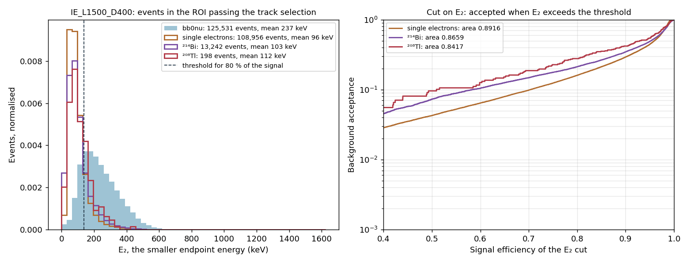

Selection
Events after each step; in brackets, the fraction of the first row. ROI: 2452.03 to 2463.63 keV.
| Step | bb0nu | single electrons | ²¹⁴Bi | ²⁰⁸Tl |
|---|---|---|---|---|
| Generated in Geant4 | 300,000 (100 %) | 300,000 (100 %) | 40,000,000 (100 %) | 40,000,000 (100 %) |
| In the input files | 255,533 (85.2 %) | 236,750 (78.9 %) | 1,316,664 (3.29 %) | 424,421 (1.06 %) |
| Accepted by the fast trigger | 201,791 (67.3 %) | 176,300 (58.8 %) | 141,442 (0.354 %) | 136,344 (0.341 %) |
| Event energy in the ROI | 152,513 (50.8 %) | 133,469 (44.5 %) | 27,618 (0.069 %) | 568 (0.00142 %) |
| Track selection | 125,531 (41.8 %) | 108,956 (36.3 %) | 13,242 (0.0331 %) | 198 (0.000495 %) |
Cut on the endpoint energy
E₁ ≥ E₂ are the energies in spheres of 10 mm around the two ends of the main track. An event is accepted when E₂ exceeds the threshold. Efficiencies and acceptances are fractions of the events in the ROI that pass the track selection; errors are binomial.
| Signal efficiency of the cut | Threshold on E₂ (keV) | single electrons accepted | ²¹⁴Bi accepted | ²⁰⁸Tl accepted |
|---|---|---|---|---|
| 90.0 % | 108 | 29.26 ± 0.14 % (31878 of 108,956) | 34.63 ± 0.41 % (4586 of 13,242) | 41.92 ± 3.51 % (83 of 198) |
| 80.0 % | 138 | 16.02 ± 0.11 % (17460 of 108,956) | 21.24 ± 0.36 % (2812 of 13,242) | 27.78 ± 3.18 % (55 of 198) |
| 70.0 % | 164 | 9.84 ± 0.09 % (10720 of 108,956) | 14.78 ± 0.31 % (1957 of 13,242) | 18.69 ± 2.77 % (37 of 198) |
| 60.0 % | 191 | 6.44 ± 0.07 % (7019 of 108,956) | 10.44 ± 0.27 % (1382 of 13,242) | 12.63 ± 2.36 % (25 of 198) |

Runs: IE_L1500_D400_bb0nu · IE_L1500_D400_single_electrons · IE_L1500_D400_bi214 · IE_L1500_D400_tl208. Numerical results: comparison.h5.